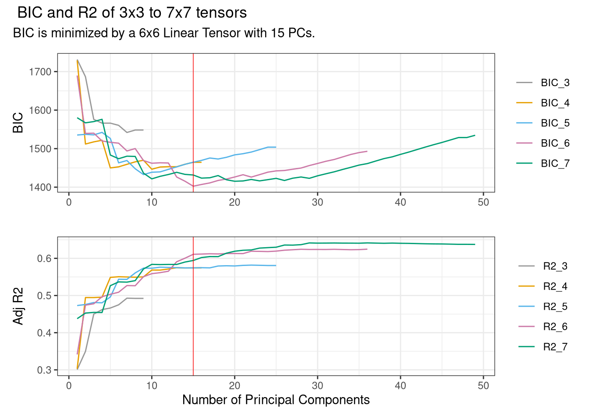

library(spatInfer)
data(opportunity)spatInfer Tutorial
The purpose of spatInfer is to estimate regressions with spatial data that are robust to the long range trends and medium range autocorrelation that are a feature of spatial observations. Specifically, a spatial basis is added to the regression and standard errors are estimated using large clusters. A feature of spatInfer is its simple workflow, requiring a sequence of only four commands.
This tutorial gives an example of the use of spatInfer based on a subset of data from Chetty et al’s examination of income mobility across US cities. This consists of the outcome, intergenerational mobility, the treatment of interest racial segregation, and a control in the form of single parent households. The longitude and latitude of each observation is included in the data. These must be named X and Y.
The four steps in estimating a spatial basis regression with large cluster inference are
Estimate the optimal spatial basis.
Generate a spatial noise placebo to select the number of clusters for standard error estimation and estimate the placebo significance level of the treatment.
Generate synthetic outcomes to test the null hypothesis that the outcome is spatial noise, independent of the treatment.
Estimate a spatial basis regression using the parameters estimated in the first two steps.
We begin by loading the spatInfer library and the data frame called opportunity.
1. Choose the Spatial Basis
The first step is to estimate the optimal spatial basis that best explains the outcome variable. The spatial basis serves both to remove long range structure from the data (acting like a systematic version of the polynomials in longitude and latitude, or continental dummies often employed in spatial regressions) and to improve inference by allowing smaller clusters of residuals.
We apply the simplest basis possible: a k \times k tensor of linear b-splines and, to minimize the loss of degrees of freedom, we select the first p principal components of the tensor. The first command `optimal_basis` chooses the combination of k and p that minimizes a Bayes Information Criterion. To make the diagram legible, select the maximum basis degree that you want to examine. As with most commands in R it starts with the regression formula and the name of the dataset. Here we will regress intergenerational mobility on racial segregation, the treatment of interest here, using the fraction of household with children headed by a lone parent.
The treatment of interest is placed as the first on the right hand side. If several are of concern the procedure can be repeated using each as the first entry.
optimal_basis(mobility~racial_seg+single_mom,
opportunity,
max_splines=5)

It can be seen here that the optimal combination is the first 11 principal components of a 4x4 spline. It is notable that this very small number of spatial controls explains 55% of variability in the outcome. Knowing only the location of a place lets you make a decent guess about the likely degree of intergenerational mobility there, without knowing anything about its other characteristics.
2. Run Placebo Test
Having chosen a spatial basis, we now need to choose an optimal number of clusters for the residuals. If there are too many, residuals will be correlated between clusters leading to inconsistent standard error estimates, whereas too few will result in unnecessarily wide confidence intervals. To choose the optimal number we use spatial noise placebos.
The placebos are constructed to have the same spatial structure as the treatment, here racial segregation. First, the treatment is regressed on the spatial basis terms selected in Step 1. The spatial correlation between the detrended residuals is assumed to decay exponentially so that the correlation between two at distance h apart is \rho \exp (- \theta / h).1 The parameters \rho and \theta are referred to as the structure and range of the correlation. Effective range is 2 \theta: at this distance correlation equals 0.14. These parameters are estimated by maximum likelihood using the fields library and then used to estimate synthetic residuals which are added back onto the predicted treatment values to give the placebo values. The regression is run repeatedly with simulated placebos in place of the real treatment and the p-values of each simulation are recorded.
These placebo p-values give us two useful things. The first is a placebo significance level of the treatment: how often does a placebo have a lower p-value (higher t-statistic) than the treatment.
The second is that the placebos provide a Monte Carlo simulation to evaluate the inference procedure used. If substantially more than 5% of placebo regressions are significant at 5% we can conclude that the standard error estimate is deficient.
Standard errors are estimated using the large cluster procedure of Bester, Conley and Hansen, where observations are partitioned into c large clusters using k-medoids. The placebo Monte Carlos allow an optimal value of c to be picked.
The placebo test is implemented by the command `placebo`. Again this starts off with the formula and data, followed by the tensor degree and number of principal components just picked by optimal_basis, and then the number of simulations. In practice the simulations settle down rapidly and 1000 will give accurate results but you should start with around 200 which will quickly give you a good idea of how your data are behaving. 2
plbo=placebo(mobility~racial_seg+single_mom, opportunity,
splines=4, pc_num=11,
nSim=1000
)
placebo_table(plbo)| Clusters | Est p | Plac p | Plac 5% | CI Width | CI |
|---|---|---|---|---|---|
| Moran=21.56, Structure=0.37, Effective Range=0.1, R2=0.08. | |||||
| Splines=4, PCs=11. | |||||
| Estimated and placebo p values and proportion of placebo regressions significant at 5%, along with confidence intervals. R2 gives the explanatory power of a regression of the treatment on the principal components. | |||||
| . | 0 | 0 | 0.23 | 0.63 | [-1.32, -0.68] |
| 3 | 0.01 | 0.02 | 0.07 | 1.05 | [-1.52, -0.48] |
| 4 | 0.02 | 0.03 | 0.09 | 1.32 | [-1.66, -0.34] |
| 5 | 0.01 | 0.03 | 0.13 | 1.16 | [-1.58, -0.42] |
| 6 | 0 | 0.01 | 0.1 | 1.07 | [-1.53, -0.47] |
Placebo generates a table where the top row uses unadjusted heteroskedasticity consistent standard errors: if spatial correlation in residuals turns out to be unimportant these are the ones to use. Below this are large cluster (Bester-Conley-Hansen) standard errors, starting with three and going up. The second column gives the estimated p-value of the treatment variable from a regression that includes spatial basis terms. As the number of clusters increases this will generally fall.
The next column gives the placebo p-value: the proportion of simulations where the placebo had a lower p-value than the real treatment. It can be seen that these differ markedly for xx.
Following this, and highlighted in orange, is the percentage of simulations where the placebo is significant at 5%. If this is markedly higher than 5% it suggests that the inference method employed was inadequate. In practice a value in the range of 0.05 to 0.07 or 0.08 indicates satisfactory performance. The next column gives the width of the confidence interval associated with each cluster and allows an informal size-power tradeoff: increasing the proportion above 5% to, say, 8% is desirable if it leads to a marked narrowing of the confidence interval. In this case here, xx clusters gives a p-value of xx and a narrower confidence interval of xx. The regression and placebo p values are close at 0.01 and 0.02.
It will sometimes happen that the proportion of placebos significant at 5% stays considerably above 5% regardless of the cluster number. In that case increasing, or sometimes decreasing, the number of principal components num_pc by one or two will usually give a satisfactory placebo value.
Below the table are a number of diagnostics and descriptive statistics. Most important is the Moran statistic, the Z-score of the null hypothesis that the correlation between each residual and its nearest neighbours is zero. We use 5 neighbours here: altering this does not alter the results materially. In our experience, the Moran statistic is usually well below 2 or substantially above it.3
In deciding whether to use a familiar HC standard error or a large cluster one we have adopted the rule of thumb that if this has a low Moran statistic and a 5% placebo value close to 0.05 it should be used, given its tighter confidence intervals. Otherwise a BCH cluster below 0.08 is picked. This allows a degree of size-power trade-off where an increase in the rejection rate can be counterbalanced by a narrowing of confidence intervals.
Below the Moran statistic are the spatial parameters. R2 gives the explanatory power of the regression of the treatment on the spatial basis variables. Unusually here it is very low: typically the treatment and outcome share common spatial trends, making any non-spurious relationship between them impossible to extract from the data. Next is the structure \rho of the residuals and then the effective range expressed as a fraction of the maximum distance between points.4
Here it can be seen that both structure and range are xx. Finally the degree of the tensor and the number of principal components used to approximate the outcome are reported.
3. Run a Synthetic Outcome Test
Following the placebo test, the next step is to calculate the synthetic outcome p-value: What is the significance level of the null hypothesis that the outcome is determined by trending noise of a specified form?
An important thing about the synthetic outcome test is that it can be computed in situations where there is a binary treatment so a placebo test cannot be estimated. In this case it is best to report the p-values for a range of values from 3 to 5 to allow reader’s to see how the regression is behaving.
We assume that the outcome is generated as a quadratic in longitude and latitude with residuals again being generated by a spatial noise process with the same exponential parameters: here there is a structure of 0.37 and effective range of 0.1.
synt_bch=synth(mobility~racial_seg+single_mom, opportunity,
splines=4, pc_num=5,
nSim=1000,
Parallel=T)
synth_table(synt_bch)| Clusters | Est p | Synth p | CI Width | CI |
|---|---|---|---|---|
| Moran=21.5, Structure=0.91, Effective Range=0.35, R2=0.33. | ||||
| Splines=4, PCs=5. | ||||
| Estimated and synthetic outcome p values for different cluster numbers. R2 gives the explanatory power of a regression of the outcome on a quadratic in longitude and latitude. | ||||
| . | 0 | 0 | 0.67 | [-1.34, -0.66] |
| 3 | 0.01 | 0 | 0.86 | [-1.43, -0.57] |
| 4 | 0.02 | 0.02 | 1.29 | [-1.64, -0.36] |
| 5 | 0.01 | 0.01 | 1.16 | [-1.58, -0.42] |
| 6 | 0.01 | 0.01 | 1.19 | [-1.59, -0.41] |
For the three clusters chosen by the placebo test, the synthetic outcome significance level is 0.02, identical to the placebo one.
4. Estimate the Spatial Basis Regression
The fact that the placebo and synthetic outcome significance levels closely match the regression one gives us considerable confidence in the reliability of the regression estimate. We therefore estimate a regression with 4 principal components of a 4x4 spline, and compute standard errors using 3 k-medoids clusters.
For comparison we also include a regression with no spatial adjustment where standard errors are clustered by state, the standard practice in such studies.
CK=CK_regression(mobility~racial_seg+single_mom, opportunity,
splines=4,pc_num=5,
clusters=3)
Clust=fixest::feols(mobility~racial_seg+single_mom, opportunity,
cluster= ~state)
modelsummary::modelsummary(list(Clustered=Clust, Basis=CK),
statistic = c("conf.int","p = {p.value}"),
coef_omit = c("Intercept|PC*"), #omit basis and intercept
gof_map = c("nobs", "r.squared"),
fmt=2)| Clustered | Basis | |
|---|---|---|
| racial_seg | -0.09 | -0.13 |
| [-0.16, -0.02] | [-0.18, -0.07] | |
| p = 0.01 | p = <0.01 | |
| single_mom | -0.75 | -0.54 |
| [-0.91, -0.59] | [-0.97, -0.11] | |
| p = <0.01 | p = 0.03 | |
| Num.Obs. | 709 | 709 |
| R2 | 0.590 | 0.767 |
Here we use modelsummary to tabulate the results but the output will work with any other standard R table package.
It can be seen here that, despite the strong spatial trends in the data, adding a spline basis and using only three clusters does not alter the results markedly compared with naive clustering by state.
Footnotes
The exponential is a special case of the Matern function with smoothness parameter of 0.5, and in principle the optimal smoothing parameter can be chosen by maximum likelihood. In practice this makes little difference: as smoothness increases the estimated range \theta falls, leaving correlation more or less unchanged.↩︎
For large datasets, estimating the necessary Cholesky decomposition of the correlation matrix and the k-medoids clusters can be time-consuming, and fast approximations can be used by setting
k_medoids=FALSEandexact_cholesky=FALSEin theplacebocommand.↩︎See Table xx in Conley-Kelly.↩︎
The 95th percentile of distance is in fact used to prevent distortion from outliers.↩︎